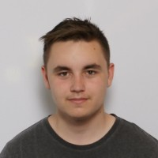
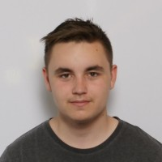

Yarne D'hulst
Ik ben een student Toegepaste Informatica aan de Hogeschool PXL, gespecialiseerd in de afstudeerrichting Applicatieontwikkeling: AI & Robotics. Sinds het middelbaar had ik al een enorme interesse in de informaticawereld vooral op het vlak van webdesign en de mogelijkheid dat er in de toekomst autonome auto’s zouden bestaan. Toen ik dan hoorde dat de hogeschool PXL een nieuwe afstudeerrichting AI & Robotica ging toevoegen was ik onmiddellijk geïnteresseerd omdat hier zowel web development inzat, maar ook de nodige kennis om uiteindelijk zelf te kunnen werken aan autonome voertuigen.
Na het bekijken van mijn Thalento rapport en mijn kernkwadranten waren er dingen die duidelijk werden waar ik oorspronkelijk nog niet van op de hoogte was van mezelf. Zo bleek uit mijn Thalento rapport dat ik een volledig pragmatische denker ben en dat kwam ook overeen met mijn kernkwadrant dat mijn beste kwaliteit flexibel zijn is. Ik moet hier wel voor oppassen dat ik niet te flexibel ben en te vaak van mening of positie verander zoals in het valkuilgedeelte van mijn kernkwadranten staat.
De beste kwaliteiten die ik geleerd heb dankzij mijn kernkwadrant is dat ik flexibel ben en vaak snel orde in chaos kan scheppen. Natuurlijk kan dit ook een valkuil worden van mij als ik te flexibel ben en mijn eigen meningen en gedachtes niet kan inbrengen in de groep. Daarom hadden we voor het IT-project begon met de groep eens gekeken naar onze kernkwadranten om zo te weten te komen waar we noden aan hebben en waar we op moeten letten als groep. Dit was gelukkig heel positief omdat de hele groep dezelfde ergernis had dan mij, dat was beslissingen maken zonder dit met de groep te overleggen en gebrek aan communicatie. Hier kwam de POP-sessie over hoe we best constructieve kritiek geven en verwerken zeer handig, omdat ik van die kennis meerdere keren tijdens het project heb kunnen van genieten. Doordat er dus ook meer communicatie in het team was en er geluisterd, maar ook gevraagd werd naar iedereen hun mening voor dat we beslissingen namen werd mijn valkuil ook opgelost. Zo stond het ook in mijn kernkwadrant genoteerd dat overleggen met de groep en wat meer analytisch denken veel nut kan hebben om mijn valkuil te vermijden.
Na het behalen van mijn professionele bachelor zou ik graag een job vinden in het gebied van web development of artificiële intelligentie, vooral AI die gelinkt is aan het autonoom doen rijden van voertuigen. De specifieke keuze voor de tak van autonoom rijden te verkiezen is niet enkel ontstaan omdat ik hier de meeste ervaring in gekregen heb de afgelopen jaren, maar ook omdat ik in mijn vrije tijd graag de bezigheden van Tesla opzoek en heel hun toekomstplannen. Gelukkig heb ik gedurende een aantal projecten tijdens de studies, het IT-project en mijn stage me helemaal kunnen onderdompelen in de wereld van zelfrijdende auto’s om hier veel ervaring en kennis op te doen. Ik wil dus nog zeker inzetten om extra kennis te vergaren over de hele MEAN-stack, maar ook op het gebied van de autonome voertuigen.